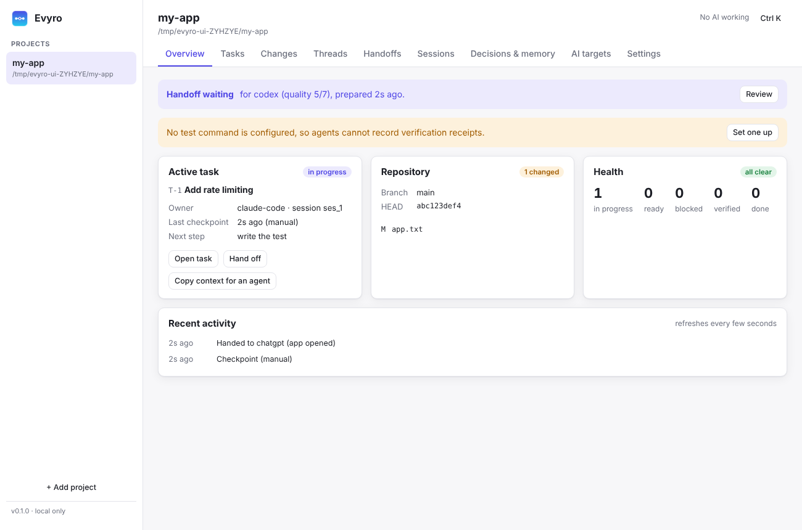

Evyro is the local-first continuity layer for AI coding. Tasks, decisions, checkpoints and test proof travel with your repo, so the next AI picks up exactly where the last one stopped.
$ evyro switch --to codex
Hit a usage limit, want a faster model, or prefer to finish in your IDE. Evyro carries the task across, checks nothing drifted, and only calls it done when the tests say so.
A continuation contract with the goal, next step, do-not-redo list, decisions and file hashes, signed so it cannot be quietly changed.
Branch, commit and file hashes are compared before anyone resumes. If the repo moved, Evyro stops and shows you what changed.
Evyro runs your tests and records a receipt. A task is verified only with every criterion met and a passing run on the current code.
Eight coding agents, six AI IDEs, four chat apps, and fourteen API providers including local models through Ollama and LM Studio.
One SQLite database on your machine. No account. Keys are read at launch from an env var or the Keychain, never stored.
The same state everywhere: a fast CLI, an MCP server agents call directly, and a desktop app for macOS, Windows and Linux.
Evyro remembers the work between agents. It is built to sit next to the tools you already use, not to replace them.
| Evyro | T3 Code | px0 | Relay | |
|---|---|---|---|---|
| Signed handoff that any AI can continue | ✓ | — | — | ✓ |
| Drift check before resuming | ✓ | — | — | partly |
| Task graph with acceptance criteria | ✓ | — | — | partly |
| "Verified" needs a passing test run on current code | ✓ | — | — | — |
| Switch to an AI IDE, chat app or raw API key | ✓ | partly | — | — |
| Run and chat with agents in one window | ✓ | ✓ | ✓ | — |
| Review workbench with diff comments | planned | — | ✓ | — |
| Code search and symbols | planned | — | ✓ | — |
| Remote and mobile access | planned | ✓ | — | — |
✓ has it · partly: some of it · — not its focus. Based on our source review, November 2026. "Planned" means Evyro does not have it yet.
Needs Rust 1.80+ and git. Installers for macOS, Windows and Linux are built in CI; they are not code-signed yet.
# install and check $ cargo install --path crates/evyro-cli && evyro doctor # in your repo $ evyro init $ evyro task add "Add rate limiter" --accept "429 after 10 req/s" --accept "tests pass" $ evyro run --to claude-code --task T-1 # Claude hits its limit $ evyro switch --to codex # or cursor-ide, chatgpt, or an API target # prove it $ evyro verify -- cargo test $ evyro task update T-1 --status verified